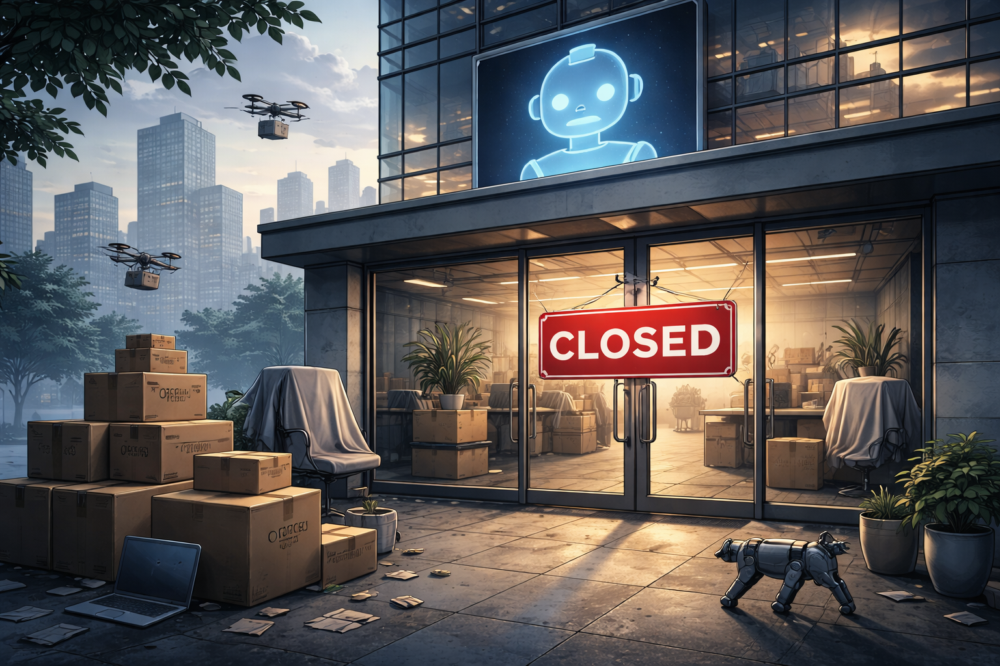

When people talk about AI disruption, the conversation usually stays at the job level. Which roles are vulnerable? Which teams will shrink first? Which professionals should reskill fastest?
I think that frame is too narrow.
AI is not only putting pressure on roles inside companies. It is putting pressure on the existence of whole companies, whole product categories, and entire business models that were built for a world with higher software costs, slower iteration, and more passive consumers.
I say this with some scar tissue. I was fired in late 2025 in a wave directly connected to AI. Not because a model literally walked into the office and took my badge, but because AI changed user behavior fast enough to make the product less relevant.
AI does not just threaten workers inside the machine. It threatens the machine itself.
Consumers Have Been Lazy. Agents Won't Be.
Right now most people are terrible optimizers.
We subscribe to digital products and forget about them. We accept price increases. We stick with a provider that is merely good enough. We do not wake up every morning comparing five competitors to save a few euros or get a slightly better feature set.
That consumer laziness has protected a lot of businesses.
But imagine a world where personal agents become mainstream. OpenClaw-style assistants, or whatever wins that market, will not behave like distracted humans. They will check your subscriptions every day. They will compare feature sets, prices, hidden fees, cancellation terms, performance, switching friction, and user sentiment. They will renegotiate or migrate automatically.
In that world, product loyalty gets weaker, switching costs collapse, and mediocre SaaS margins come under brutal pressure.
And that is before we even talk about the supply side.
Cheap Production Means More Attackers
If a small team, or even a single experienced engineer using agents, can bring a SaaS to production at a fraction of the historical cost, then popular digital products should expect many more competitors.
Not just one ambitious startup every two years. Dozens. Maybe hundreds in some categories. Fast copies, niche variants, local versions, vertical-specialized versions, cheaper clones, aggressively bundled alternatives.
The classic moat of "it takes too much time and money to build this properly" is getting weaker every quarter.
That does not mean every company disappears overnight. Distribution still matters. Brand still matters. Trust still matters. Regulation still matters. But many products that looked defensible in 2022 start looking fragile in 2026 when both creation and switching become dramatically cheaper.
It Is Not Hard to Imagine Entire Companies Disappearing
Take subscription products. If users, or their agents, can constantly scan the market and move to a competitor that performs slightly better at a slightly lower price, many companies lose the comfort of customer inertia. They now need to earn their place continuously, not once a year.
Comparison websites and software directories are a case I know personally. If users increasingly ask an AI assistant what tool they should use instead of visiting a portal, then the business model built around human browsing and SEO traffic starts to erode. The company is still there, the employees are still there, the org chart is still there, but the ground underneath the product has already changed.

Payment intermediaries are a good example of how far this can go. If intelligent agents can find cheaper, faster, trustworthy ways to move money, then large incumbents living on historical distribution advantages should not assume they are permanent. Visa and Mastercard are only examples here, but the principle is wider: any toll booth business should be nervous if AI can find alternate roads.
Tailwind CSS is perhaps the closest-to-home illustration for people in software. Tailwind is more popular than ever — it has effectively won the utility-first CSS debate. But its monetization strategy was built around Tailwind UI: a library of premium, hand-crafted components you pay for. That model made sense when building polished UI from scratch was time-consuming and expertise-dependent. Now any developer can describe a component in a prompt and get production-ready Tailwind markup in seconds. The product is thriving. The revenue model underneath it is quietly eroding. Popularity and profitability have decoupled.
This is the part many people still underestimate. They think AI will hurt engineers, designers, support agents, translators, or QA teams, but leave the company itself intact. I do not believe that. In many cases AI will compress margins, commoditize features, reshape discovery, and remove the reason for the company to exist in its current form.
The Dangerous Moral Comfort
One thing that bothered me after I said publicly that I had been displaced in an AI wave was the reaction from some people outside the industry. There was a subtle sense of: okay, engineers were overpaid, tech had it too good, now reality arrives, maybe this is deserved.
That reaction is shortsighted.
This is not a story about privileged engineers finally getting humbled. It is a story about a force that starts in visible places and then spreads into less visible ones. First one profession, then another. First one category of company, then another. First one layer of the economy, then the adjacent ones.
There is an old warning about what happens when people stay silent about a threat because it has not reached them yet. I think the structural lesson applies here too: if you only care when disruption hits your own job, your own sector, or your own city, you are reacting far too late.
This Is Why It Becomes a Social Issue
At some point this stops being a pure market discussion and becomes a social one.
If AI can reduce development costs, automate knowledge work, intensify competition, weaken product moats, and destabilize whole sectors at global scale, then the answer cannot be "let the market sort it out" and hope society absorbs the shock.
I am not arguing against progress. I use these tools every day. I am adapting. I believe AI will create enormous upside for medicine, science, education, engineering, and accessibility.
But if the productivity gains are real, then governments around the world need to take seriously what happens to labor markets, tax bases, concentration of power, and the speed at which whole categories of firms can become obsolete.
We need serious discussion about regulation, safety, competition policy, education, transition mechanisms, and what economic dignity looks like in a world where more and more valuable work can be automated or massively compressed.
My Take
The strongest part of the argument is not "AI will replace employees". That is already obvious. The stronger and less discussed claim is that AI changes consumer behavior, lowers production costs, and turns optimization into software. Once that happens, some companies do not merely get leaner. They lose the conditions that made them viable.
My only refinement is this: not every company disappears, but every company should now assume its moat is under review. If your product depends on customer inertia, expensive software development, weak comparison, or inefficient manual decision-making, then AI is not just a tool you can adopt. It is an existential threat.
That is why I think this is a good philosophical article topic. It is not abstract at all. It is about what kind of economy, labor market, and social contract we want before the transition outruns our ability to respond.
Happy building, and see you in the next story!